I started this blog two years ago because I wanted to discover my own personal writing style, or figure out if I even liked writing in the first place. At the time I remember hearing1 that the only way to get better is to write more2.
1 This could have been fully hallucinated but that doesn’t matter
2 Something that I always used to say about getting better at darts during my stint as President of the University of Manchester Darts Society, again probably unfounded
This blog has evolved alongside myself throughout the last few years. I originally wrote about anything: topics related to optimisation, machine learning, or just basic tutorials on plotting graphs. To maintain motivation, I discovered it was important to write about things that I found personally interesting and by extension would enjoy reading. This was my heuristic for the first 3-4 months, write what I would want to read.
As I would talk about what I wrote about to friends, we would discuss extensions, how the themes related to books we’d read, or items in the news. Eventually what I found interesting to read evolved and with it what I wrote about. It was a cycle of reflection that led to something that I no longer consider an exercise in writing, but a fully-fledged platform for self-expression. I believe this form of self-expression will be an increasingly important ability to demonstrate as people shun large easy-to-attach-to socially acceptable causes in favour of a more personal way of understanding others. In effect the ability to answer the question: what do you believe in?
Why is this important? After a year or so I realised that a lot of what I found interesting to read3 was centered around values. Either an explicit description of where values4 originate from5, or biographies of people who have embodied a set of values6. Looking back I can point to two discussions where this focus on values seemed to emerge. The first was when an academic and mentor at Imperial College encouraged me to think deeper about what I stand for. He had served in the British Army before becoming an academic and has one of the most impressive careers of anyone I met at Imperial. He spoke about joining the Army post-PhD and immediately being given a set of values that he has never lost. It doesn’t particularly matter what they are7, but it was the idea of standing for something, and demonstrating intention when planning and executing a mission8 with them in mind. It doesn’t just give you the confidence to succeed but demonstrates to others that you are serious. When someone like that tells you he doesn’t know what you stand for, you start to think a bit deeper about how to live your life.
3 And by extension write about
4 Western or otherwise
5 Even if the majority of people do not appreciate this
6 Whether or not you agree that they are ‘correct’.
7 You can look these up easily
8 Used both literally and figuratively
9 Embodying the very values he writes about in a classic move
The second experience was just after reading Dominion by Tom Holland, which I had bought at random from a charity shop in Paddington. I conincidentally ended up playing cricket at the same time as him every week at The Oval and after a few weeks built up the courage to tell him how I very much enjoyed his book, and it encouraged me to write and think about my own values more. He was of course extremely gracious9 and the whole experience brought it all much closer to home. I realised that you were allowed to discuss and think on a deeper level about why you do things. You can choose to believe in a correct way of living, and disagree with those whose beliefs are at odds with that. This might seem relatively obvious but I think it’s important not to take it for granted.
In light of the shift in focus of this blog and aligning with my slightly-invented situation that it is becoming/will become increasingly important to own the values you consider correct, I will use the remainder of this post to outline my values, what has influenced them, how they developed, and where I’ve written about them before10.
10 Consciously or not
I don’t think it’s fair to load what I will present below with a a few definitions or short summaries. These beliefs are more easily defined by my experiences, books, and writing. It wouldn’t do them justice to summarise them in an easily digestible way. Values shouldn’t be easily digestible, that would render them light and meaningless. I don’t think values should be heavy. You would, and should have to read the same books, experience the same emotions, go to the same places and have the same discussions in exactly the same order to fully understand them. But that’s life, and that’s how I think people should understand their own beliefs (and by extension appreciate that this is how others see their own beliefs).
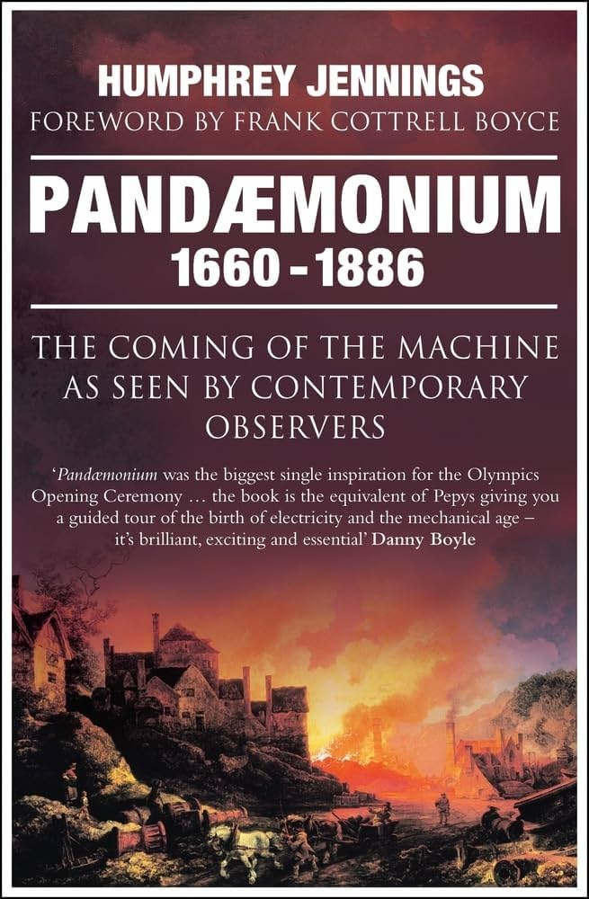
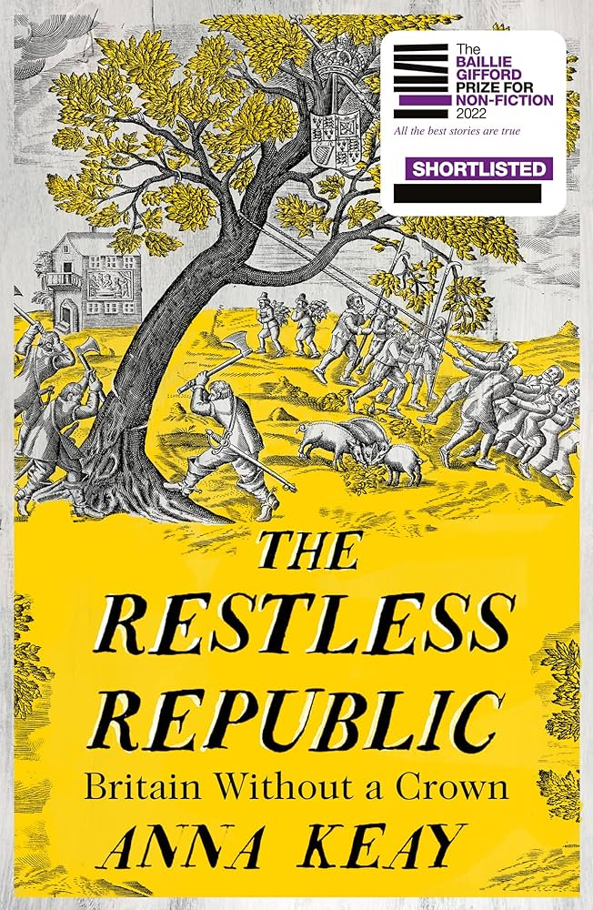
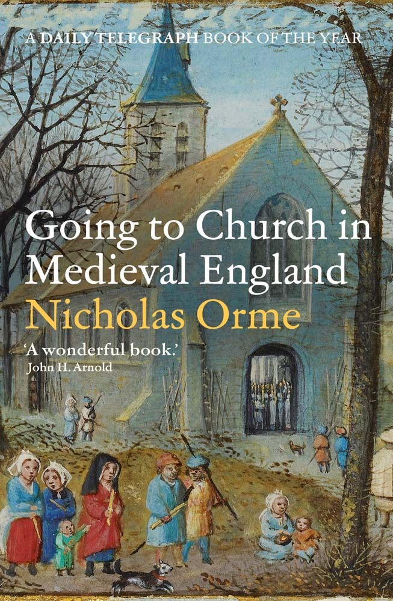
I am unashamedly a Baillie Gifford11 fan. I’ve found it to be a relatively good heuristic for what to read. Plus if you read 24 books a year over 30 years you’ll only ever read about 700 books, which seems oddly small for a lifetime. Probably a small-ish sized room walls worth of books. If I see a shortlisted sticker then it gets weighted a little more strongly in my head.
11 The prize not the investment manager
12 I believe Anna Keay was on a podcast I listened to but this might be a hallucination.
The Restless Republic appeared to me during my PhD12 when I was looking to read anything that wasn’t about chemical flow reactors or Bayesian optimisation, something real and entertaining.
It recounts the years where Britain was a republic between the violent death of King Charles I, and General Monck’s march for restoration. Told through the lens of a few different individuals, in my opinion it highlights the role that individuals serve in building and destroying institutions and how people respond to these changes.
I read Going to Church in Medieval England shortly after. Set in the 400 year period before the republic, to me it highlights how institutions form lasting societal impressions, that are generally under appreciated by the population. It breaks down every aspect of what it would have been like to attend church, and the developments that have stemmed as a result, or been lost13. Having lived in Putney (which was very much a part of historical London), I would walk down to the medieval St Mary’s church on the Thames to sit and read this book at the weekend. This church also ironically appears in the Restless Republic as the location of the Putney Debates, where parliamentarians planned what their post-Charles I republic would look like14. The Britain that this book leaves behind is one that feeds into the Restless Republic, not only temporally but also on a personally physical level through St Mary’s church. A Britain where institutions have been dismantled but their traditions broadly remain, giving rise to new beginnings. Read in series these two books highlight how values are built up and enforced by institutions, and what happens when the rug is pulled underneath them.
13 For example timekeeping and clocks, first appearing on church towers to indicate when mass was, as opposed to the often inconvenient sun-based system, particularly in the winter.
14 I think the book mentions this but really the ideas debated here eventually went on to form the basis of the American constitution. If Wandsworth Council had any sense you should be seeing huge amounts of American tourists here, the Wetherspoons next door would be full to the brim. Separately, I’m also waiting for the Thomas Cromwell vistor centre / 4D cinema experience.
Pandaemonium 1660-1886 follows on from the Britain that is left behind in the Restless Republic. It charts the Industrial Revolution entirely through eyewitness accounts. Similarly, I came away with an appreciation for the individual’s responsibility and ability to drive change, and how this can occur in an often quiet and understated setting. This book represents the purest form experiencing this change, unaffected by stylistic choices, and is commonly said to more closely resemble a film or a montage of the industrial revolution as opposed to a retelling.
Going back I would read these three books in chronological order. The combined story they tell is one that begins with a nation of farmers and bishops, and through the individual, ends with Britain as an industrial and economic superpower with the world’s strongest democracy. They have provided me with what I consider a good overview of how Britain was built over the last 800 years, by people working quietly away, unburdened by what has been. Institutions are built by great people who don’t stop to consider if they could, and they are brought down in periods of boredom by those who don’t consider if they should. They highlight how change happens, and how humans naturally respond. These aren’t necessarily values in and of themselves, but to me capture the feeling and need to progress.
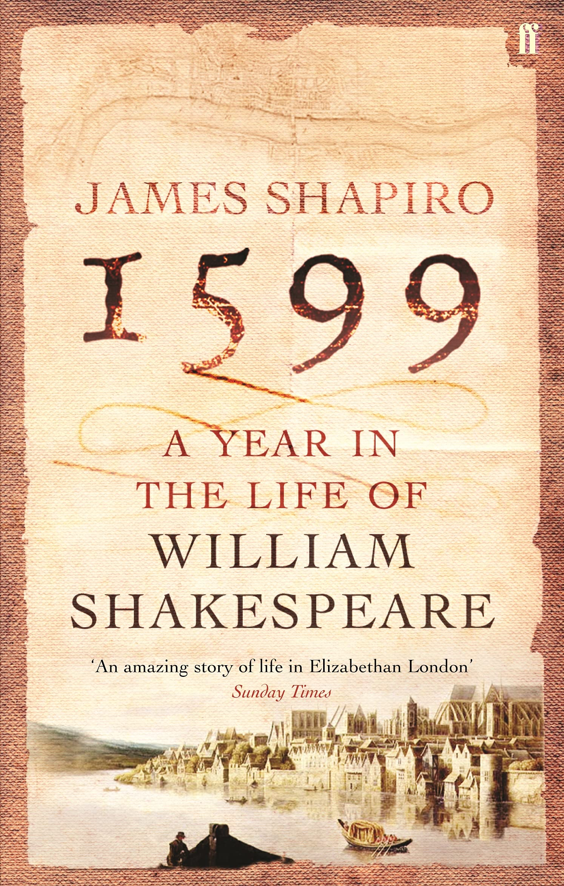
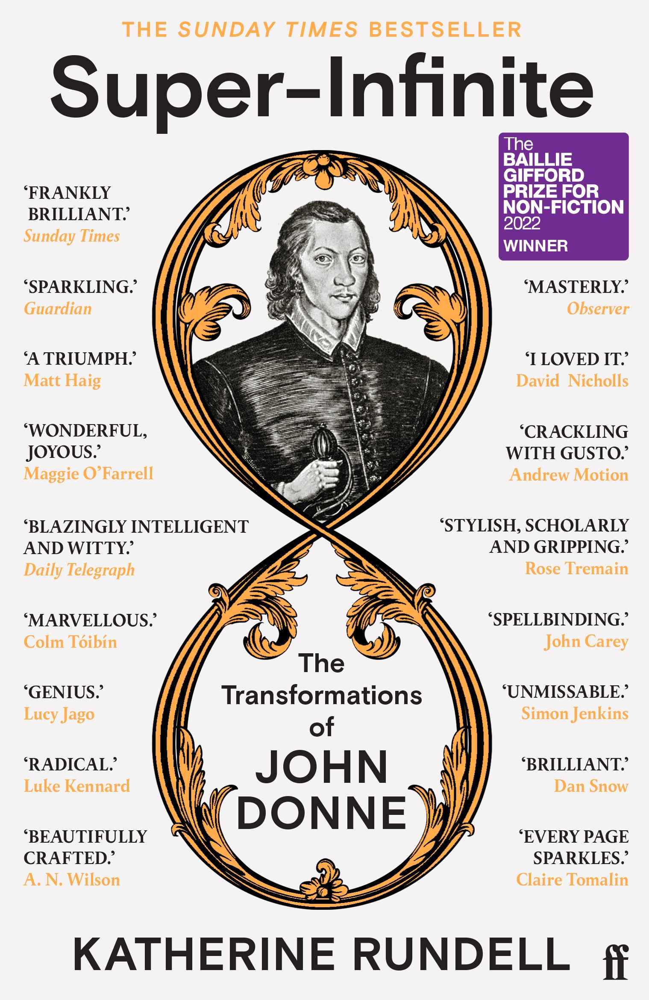
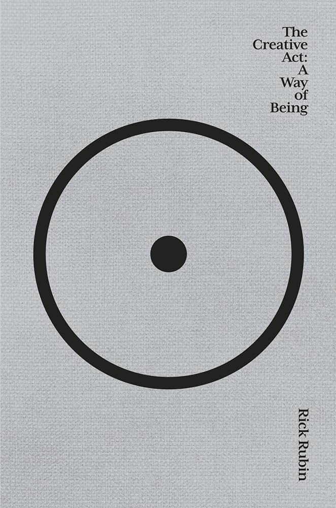
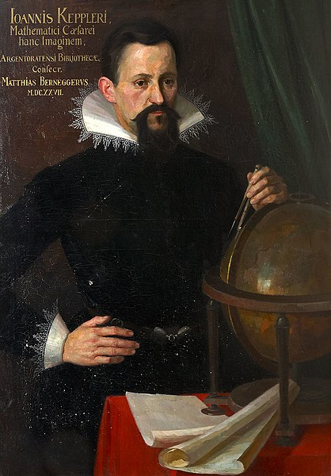
A common theme that I have experienced when thinking about scientific or creative progress are feedback loops or cycles. People naturally inspire each other, and I found myself experiencing this in a number of settings.
The most contemporary example and probably where I first saw this point made so explicitly was after I bought a copy of The Creative Act by Rick Rubin shortly after it was first published. There is a great section where he discusses a period where The Beatles and the Beach Boys both inspired each other to produce great art (Rubber Soul and Pet Sounds), neither of which may have existed without the other.
When Brian Wilson first heard the Beatles’ Rubber Soul, his mind was blown. “If I ever do anything in my life, I’m going to make that good an album,” he thought at the time. He went on to explain, “I was so happy to hear it that I went and started writing ‘God Only Knows.’” Being made happy by someone else’s best work, and then letting it inspire you to rise to the occasion, is not competition. It’s collaboration. When Paul McCartney heard the resulting Beach Boys album, Pet Sounds, he too was blown away and reduced to tears, proclaiming “God Only Knows” was to his ears the best song ever written. Buoyed by the experience, the Beatles played Pet Sounds over and over while creating another masterpiece, Sgt. Pepper’s Lonely Hearts Club Band. “Without Pet Sounds, Sgt. Pepper never would have happened,” Beatles producer George Martin said. “Pepper was an attempt to equal Pet Sounds.” This creative back-and-forth wasn’t based on commercial competition, it was based on mutual love. And we are all the beneficiaries of this upward spiral toward magnificence. No system exists that can rank which work is most reflective of the maker. Great art is an invitation, calling to creators everywhere to strive for still higher and deeper levels.
I then encountered a similar theme in preparation for writing my PhD, where I read a few studies on knowledge discovery and reasoning. Reasoning tools are commonly partitioned into either deductive or inductive-based approaches where knowledge either stems from observations (i.e. data-driven) or from first principles (i.e. physics-first). As machine learning became more prevalant, particularly in science and engineering, there has been the great debate as to whether neural networks or data-driven models can fully replace first-principles simulations. In principle, these are the same debates that were held in thousands of years ago, just applied to a different context. Some choose to ignore the nuance in the debate and simply combine both paradigms (i.e. hybrid modelling) forgoing logical consistency in favour of short term improvement of predefined metrics. What I believe, and what I think is presented best by Thomas Kuhn, is that it is the tension between inductive and deductive reasoning that drives scientific discovery. I articulated this point in my post on Machine Learning and Discovery. In it I discuss Mikuláš of Kadaň and Kepler. The first who built an accurate astronomical clock based on incorrect observations, the second deriving the correct first principles for planetary motion, partly15 inspired by the astronomical clock. Neither existing without the other. Just as The Beatles and the Beach Boys formed their own cycle of expression.
15 As the story goes
16 Guess
17 e.g. St Mary’s church, Putney
Finally, I read both 1599 and Super-Infinite at a very similar time of year. 1599 charts a year16 in the artistic and personal life of William Shakespeare, with an analysis of the cultural events surrounding the plays he produced this year (Julius Caesar, Henry IV etc.), while Super-Infinite presents a biography of the love poet and Dean of St Paul’s Cathedral John Donne, similarly told through his work. Like my encounter with Tom Holland, living in London (and being raised in an area near Stratford-upon-Avon) both books resonated with me because of the immediacy of the locations and the ability for the city to maintain a deep sense of history17. I regularly see and experience locations, streets and buildings from both books. Both Shakespeare and John Donne would have lived in the same London at the same time, with each book mentioning the other writer/poet as a contemporary character. While there’s no concrete evidence that they did meet, reading the books together paints a portrait of a London with literary and theatrical scene where people are constantly responding, reacting, and trying to improve on others. Shakespeare for example killing off beloved character Falstaff in a bid to demand more intellectual engagement from his audience, or John Donne introducing his friends and lovers to metaphysics. For me, these cycles of inspiration and expression are what drives progress. I consider it important to listen to, learn from, and improve on others.

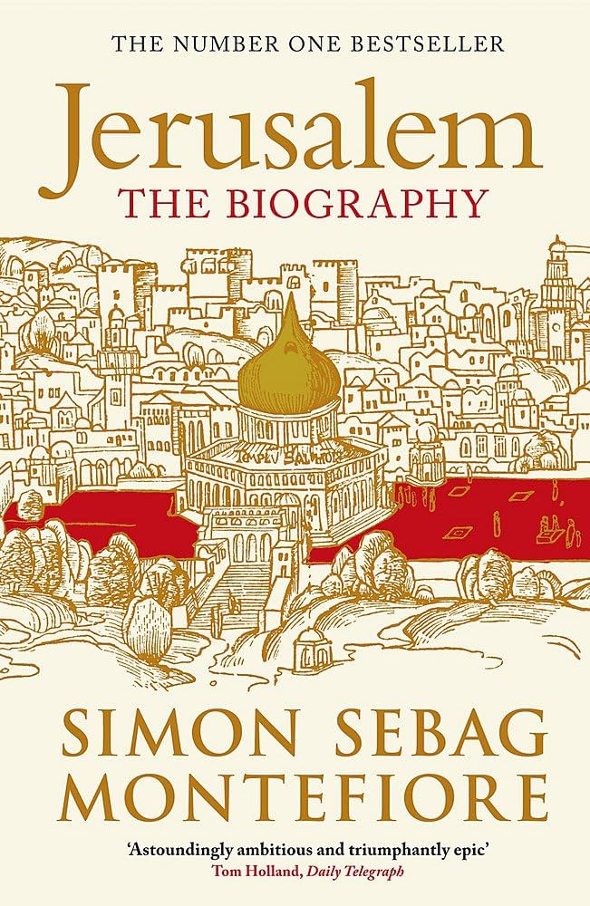
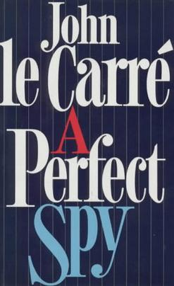
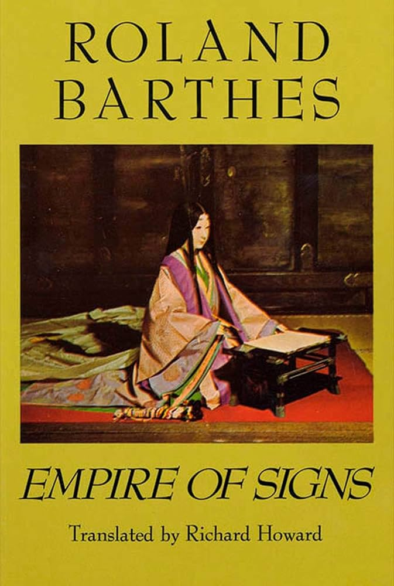
In early 2024 I visited Istanbul and wrote about how people have historically imposed values on others, how people have approached encountering other values, and how this relates to cultural and religious alignment in LLMs. Istanbul seemed to deal with these layers well to me. In recent years the Hagia Sophia was converted from a secular museum to a mosque, though in my opinion this practically has meant not much and was done quite sensitively. A similar city to Istanbul in this sense is Jerusalem. While I’ve never been, Simon Sebag Montefiore’s book provided me with an overview for how values and beliefs are often more layered and complex than distinct and digestible, and that there are historically better ways of dealing with this complexity than conflict.
I read Empire of Signs before and during a trip to Japan. I wrote about it in my post on Japan and creative LLMs, and in my post on cultural competition in AI. In it Barthes presents an idealistic vision of Japan that holds a mirror up to our own beliefs, generally concerned with the lack of ‘whole’ that we focus on in the West and an increased emphasis on the in-between-ness of society, food, the arts and culture, the zen. Reading this book, and visiting Japan simultaneously made me appreciate the opposing and equally valid ways of looking at the world, and centering (or not centering in a Barthes-esque view of Japan) your life around your beliefs. I felt like I came away not only understanding Japan more18 but understanding my own way of living. To me it is about having respect for others and understanding how other people think, particularly if they have different or opposing values. In reality, there is no real reason for people to have a globally consistent set of values, or want to live life in the same manner. Respecting this, I believe, benefits everyone. In A Perfect Spy, Magnus Pym is a fictional double agent, who no one19 doubts would have a different ideology to themselves. He eventually runs out of room but not before explaining to the cast of other characters precisely why he did what he did. To me it is about ideologies, motivations and what may happen if you take for granted the layers of beliefs that occur in the real world and is one of the best books I’ve ever read.
18 With the help of my former flatmate now living in Tokyo.
19 Eventually they realise this
Together, these books and experiences highlight to me that people do think differently to each other, sometimes in harmony with a personal set of values, and sometimes in direct opposition. On one end of the spectrum, under appreciating this can put your own beliefs at risk, but on the other end it has the capacity to cause real harm.
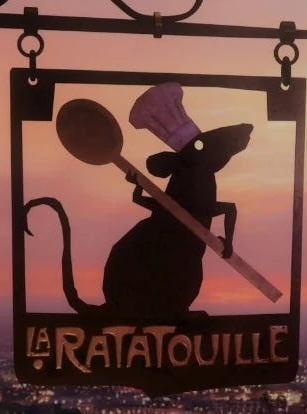
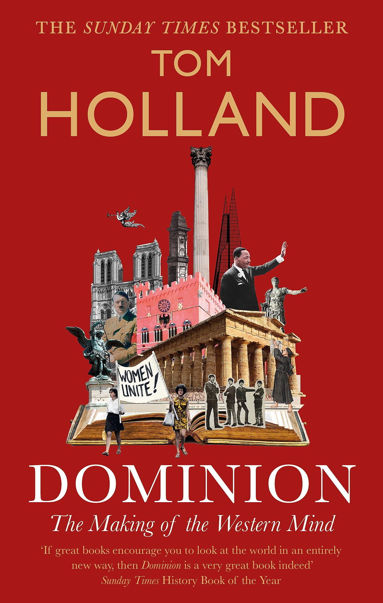
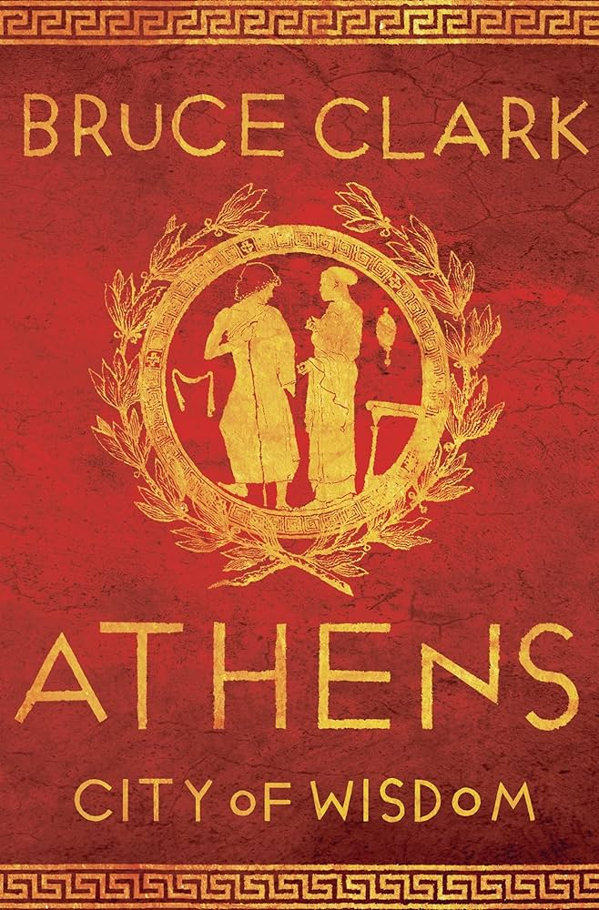
Finally I’ll highlight two last books, a trip, and two posts. As I previously mentioned I found Tom Holland’s Dominion in a charity shop in 2021 when I neither knew about him, the book, or the Rest is History podcast. Having read it and met him, it really does change the way you see the world. Bruce Clark’s Athens accompanied me on a trip there where I made a point of reading the relevant passages at the proscribed locations. His description of what Athenians, the demos, would have felt like standing at the top of the Acropolis was very evocative. These people had values that they believed to be correct. You can sense the confidence that they had 2500 years later, moreso than you can in a city with a similarly layered history such as Istanbul. As Tom Holland describes, these ideas morphed into Christianity, through philosophy and gave birth to the Western world. You cannot visit the acropolis and not want to be associated with this confidence in some way20, and there is no real reason why you shouldn’t. Since experiencing Athens, and reading Dominion, I’ve considered the values that have resulted and that have defined the West, and consider them to be the correct ones.
20 as Elgin took too seriously
Finally, I’ll describe the two pieces that I have enjoyed writing the most. The first, an analysis of Wallace and Gromit from the perspective of Ancient Greek mythologies and an analysis of Ratatouille that frames the animated rat a false prophet. Both are self-indulgent, but both highlight how often fun it is to think a bit deeper about why we live life the way we do, to look around and appreciate those with similar and different beliefs in a lighthearted manner. This ability for self-reflection is a feature in itself that shouldn’t be taken for granted. One that can provide humility and confidence in equal measure.
That’s it for now. I think these are strong enough experiences for me to live and benefit from them, but I appreciate that people could and should change21. I hope the half-life of this post is about a decade. As I say at the beginning, I believe values should be heavy and hard to shift or sway. Maybe in ten years I’ll write another version, or a reflection, but for now this is me.
21 As a belief, meta.